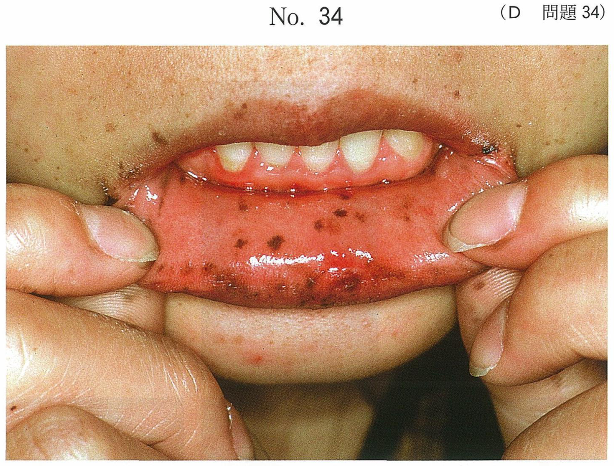

顎口腔領域の炎症
歯性感染症の概要
歯性感染症とは、う蝕や歯周疾患を原因として細菌性の炎症が周囲組織に波及する疾患である。感染経路は主に2つ：①う蝕から歯髄→根尖→歯槽骨→周囲組織、②歯周ポケットから周囲組織への波及。
炎症の経過
- 歯周炎・根尖性歯周炎 → 限局性の炎症
- 骨膜炎（骨膜下膿瘍） → 骨膜を超えて波及
- 蜂窩織炎 → 周囲の組織隙にびまん性に拡大
- 口底蜂窩織炎（Ludwig angina） → 多間隙に急速拡大、生命の危険
顎口腔領域の間隙
筋膜で囲まれた疎性結合組織で満たされた潜在的な腔隙。炎症が波及しやすい。
主な間隙と特徴
| 間隙 | 位置・境界 | 臨床的特徴 |
|---|---|---|
| 舌下隙 | 顎舌骨筋の上方、口腔底 | 口底の発赤・腫脹、舌の挙上 |
| オトガイ下隙 | 顎舌骨筋の下方、正中部 | オトガイ部の腫脹 |
| 顎下隙 | 顎舌骨筋の下方、顎下腺を含む | 顎下部の腫脹・硬結 |
| 頬部隙（頬隙） | 頬筋と咬筋の間 | 頬部の腫脹 |
| 咀嚼筋隙 | 咬筋・側頭筋・翼突筋周囲 | 開口障害 |
| 翼突下顎隙 | 下顎枝と内側翼突筋の間 | 開口障害・嚥下障害 |
| 咽頭周囲隙 | 咽頭の側方・後方 | 嚥下障害・気道狭窄 |
| 側咽頭隙 | 咽頭側方、頸動脈鞘を含む | 嚥下障害、縦隔への波及リスク |
原因歯別の波及先
| 原因歯 | 主な波及先 |
|---|---|
| 上顎前歯部 | 犬歯窩、鼻腔底 |
| 上顎臼歯部 | 頬部隙、上顎洞、側頭下窩 |
| 下顎前歯部 | 舌下隙、オトガイ下隙 |
| 下顎臼歯部 | 顎下隙、舌下隙、翼突下顎隙 |
根尖が顎舌骨筋付着部より上にある場合 → 舌下隙、下にある場合 → 顎下隙に波及する。
- 舌下隙 ⇔ 顎下隙 ⇔ 翼突下顎隙 ⇔ 咽頭周囲隙 → 多間隙に拡大可能
- 咽頭周囲隙 → 縦隔へ波及 → 降下性縦隔炎（致死的合併症）
Ludwig angina（口底蜂窩織炎）
舌下隙・顎下隙・オトガイ下隙の両側性にびまん性の蜂窩織炎が急速に進行する重篤な病態。
- 舌の挙上・後方偏位 → 気道閉塞のリスク
- 嚥下障害、開口障害
- 頸部全体の板状硬結
- 合併症：気道閉塞、降下性縦隔炎、敗血症
- 最も注意すべきは「呼吸」（気道確保が最優先）
歯性感染症の治療
対症療法と原因療法
| 分類 | 治療法 | 目的 |
|---|---|---|
| 対症療法 | 冷罨法、抗炎症薬の投与 | 症状（疼痛・腫脹）の軽減 |
| 原因療法 | 抗菌薬の投与、原因歯の抜去 | 感染源の除去・制御 |
| 外科的処置 | 膿瘍切開・排膿 | 膿の排出・減圧 |
過去問で実力チェック
下顎前歯部の化膿性炎症が波及しやすいのはどれか。2つ選べ。
b 顎下隙
c 翼突下顎隙
d オトガイ下隙
e 側咽頭隙〈咽頭側隙〉
【解説】下顎前歯部の根尖は顎舌骨筋付着部より上方（舌側）およびオトガイ部正中に位置するため、舌下隙とオトガイ下隙に波及しやすい。顎下隙は下顎臼歯部からの波及が多い。翼突下顎隙や側咽頭隙は下顎前歯部から直接波及しにくい。
炎症が波及した場合に重篤な嚥下障害を伴うのはどれか。2つ選べ。
b 側頭下窩
c 翼口蓋窩
d 咽頭周囲隙
e 翼突下顎隙
【解説】咽頭周囲隙は咽頭の側方・後方に位置し、炎症が波及すると咽頭の腫脹により重篤な嚥下障害を生じる。翼突下顎隙は内側翼突筋と下顎枝の間に位置し、炎症が波及すると開口障害に加えて嚥下障害も生じる。顎下隙の炎症では顎下部の腫脹が主で、嚥下障害は比較的軽度。
急性歯性感染症における対症療法はどれか。すべて選べ。
b 膿瘍切開
c 抗菌薬の投与
d 原因歯の抜去
e 抗炎症薬の投与
【解説】対症療法は症状を軽減する治療である。冷罨法（疼痛・腫脹の軽減）、膿瘍切開（排膿による減圧）、抗炎症薬の投与（消炎・鎮痛）が該当する。抗菌薬の投与と原因歯の抜去は原因療法であり、感染源の除去・制御を目的とする。
32歳の男性。頸部の有痛性の腫脹を主訴として来院した。1週前から左側顎下部に疼痛と腫脹とが出現したという。その後、徐々に増悪し2日前から摂食が困難になったという。初診時の顔貌写真（別冊No.43A）とCT（別冊No.43B）とを別に示す。 最も注意すべきなのはどれか。1つ選べ。


b 呼 吸
c 血 圧
d 脈 拍
e 疼 痛
【解説】頸部の広範な腫脹と摂食困難は、Ludwig angina（口底蜂窩織炎）を示唆する。舌下隙・顎下隙の炎症が進行すると、舌が挙上・後方偏位し気道閉塞を起こす危険がある。したがって最も注意すべきは呼吸であり、気道確保が最優先となる。体温や脈拍も重要だが、致死的な合併症は気道閉塞である。